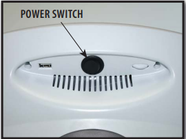

How to turn on the E-stim machine to conduct clinical electrical stimulation therapy.
- Inspect the power cord for any fraying or exposed wires.
- Ensure the power cable is connected to the wall outlet.
- Verify that no electrodes are currently attached to a patient.
This procedure initializes the multi-modality console before a patient treatment session begins. You must complete this setup task whenever the device has been turned off.
-
Toggle the main power switch.
Flip the rocker switch located on the
back panel
of the device to the
ON (I)
position.

-
Verify screen display.
Confirm that the digital screen displays the home menu.
Note: If an error code displays, do not proceed.
The digital display screen will illuminate, displaying the main clinical modality selection home menu.